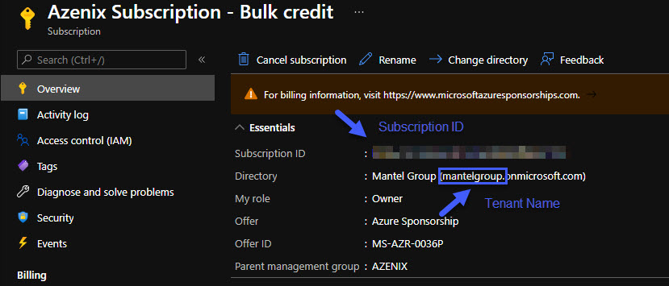
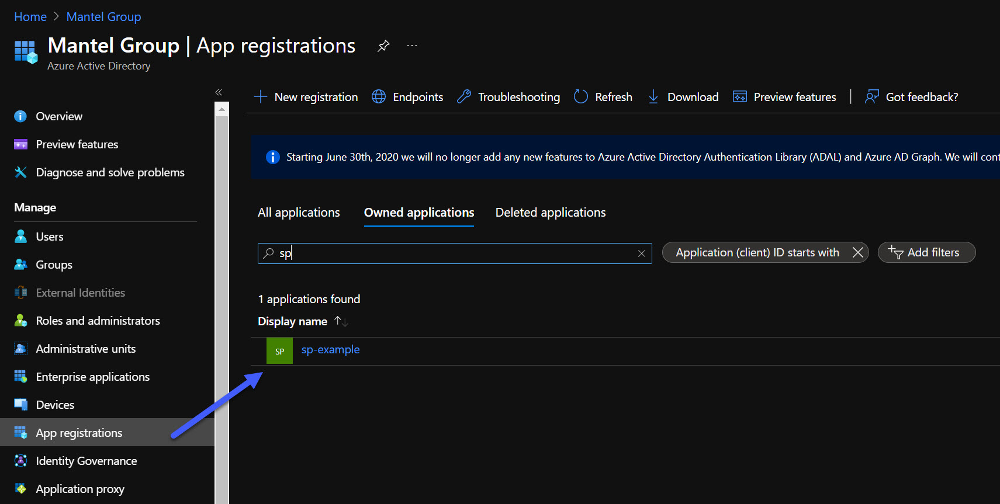
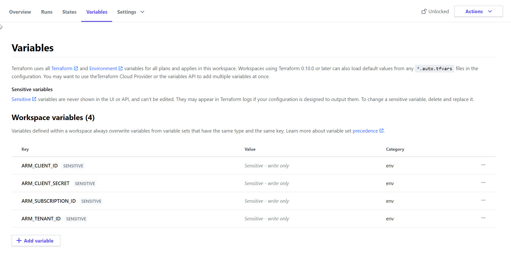

Introduction
In this tutorial I’ll show you how to create an Azure Service principal using Azure CLI, and automatically upload the service principal details to Terraform Cloud. This approach minimises ‘click-ops’ and sets us up to use Terraform Cloud to deploy our Azure infrastructure.
Prerequisite Tasks
Command-line Tools
Install the following command-line tools if you don’t already have them setup in your development environment:
Fish Shell
My shell of choice for this tutorial. It has great features like syntax highlighting and auto completion working out of the box. Its syntax is a little different from bash, but this shouldn’t be a huge leap if you are already familiar with bash.
Azure CLI
We’ll use this to connect to Azure and create our service principal. Install it by running:
1
curl -sL https://aka.ms/InstallAzureCLIDeb | sudo bash
jq
A lightweight command-line JSON processor. We’ll use this to extract the service principal details returned by Azure CLI. Install it by running:
1
sudo apt-get install jq
Terraform Cloud Account
Use the following Hashicorp guides to setup your Terraform Cloud account if you don’t already have one:
- A Terraform Cloud account: Create a Terraform Cloud account and organisation
- A workspace: Create a workspace
- An API token: Generate an API token
ℹ️ Note: The API token will only be displayed once. Be sure to store it somewhere secure, and avoid checking it into source control.
Set Terraform Cloud Variables
Take the organisation name, workspace name, and access token from the previous step and set them as variables in our script:
1
2
3
4
5
6
#!/bin/fish
# Set Terraform Cloud variables
set TF_ORG "<insert tf cloud organisation name>"
set TF_WORKSPACE "<insert tf cloud workspace name>"
set TF_TOKEN "<insert tf cloud token>"
Set Azure variables
In the Azure portal, go to your target subscription and take note of the subscription id and tenant name:

Store these values in environment variables. We’ll also set name of the service principal that we want to create here:
1
2
3
set ARM_SUB_ID "<insert target subscription id>"
set ARM_TENANT_NAME "<insert Azure tenant name>"
set ARM_SP_NAME "sp-example"
That’s all of the manual setups tasks done! We now have enough information to automate the rest of the process.
Script Explanation
Service principal Creation
Here we’ll use Azure CLI to access our subscription and create the service principal for Terraform Cloud. Azure CLI returns the principal details as a json response - we’ll store this in the ARM_SP_DETAILS variable:
1
2
3
az login --tenant $ARM_TENANT_NAME.onmicrosoft.com
az account set --subscription $ARM_SUB_ID
set ARM_SP_DETAILS (az ad sp create-for-rbac --role contributor --name $ARM_SP_NAME --sdk-auth)
Extract Service principal Properties Using jq:
The json response contains the information we need to store in Terraform Cloud - we’ll use jq to extract the required elements. The --raw-output option prevents the guids from being converted to strings, which would cause issues with our script further down the track.
1
2
3
set ARM_CLENT_ID (echo $ARM_SP_DETAILS | jq '.clientId' --raw-output)
set ARM_CLIENT_SECRET (echo $ARM_SP_DETAILS | jq '.clientSecret' --raw-output)
set ARM_TENANT_ID (echo $ARM_SP_DETAILS | jq '.tenantId' --raw-output)
Set Terraform Cloud Variables
Now that we’ve created our Azure service principal, we’re going to pass its details to the Terraform Cloud API. The API accepts data in following json format/template, which we’ll write out to a temporary file:
1
2
3
4
5
6
7
8
9
10
11
12
13
14
15
16
17
18
19
20
21
echo '{
"data": {
"type":"vars",
"attributes": {
"key":"my-key",
"value":"my-value",
"category":"env",
"hcl":false,
"sensitive":true,
"description":""
}
},
"relationships": {
"workspace": {
"data": {
"id":"my-workspace",
"type":"workspaces"
}
}
}
}' | cat > variable.template.json
Create Data Structure
I would have liked to use a dictionary to store our variable key-value pairs, but unfortunately Fish does not support this natively. I’m just going to create a pair of arrays here as a quick-and-dirty workaround:
1
2
3
4
5
6
7
8
9
10
11
set -l varkey \
ARM_CLIENT_ID \
ARM_CLIENT_SECRET \
ARM_SUBSCRIPTION_ID \
ARM_TENANT_ID
set -l varvalue \
$ARM_CLIENT_ID \
$ARM_CLIENT_SECRET \
$ARM_SUBSCRIPTION_ID \
$ARM_TENANT_ID
Loop Through the Data to Upload Each Variable to Terraform Cloud
Here we’ll loop through our ‘dictionary’ and substitute our key-values into the json template using sed, before writting the payload out to another temporary file. We then use curl to send the json to the Terraform Cloud API, using the token we created earlier.
1
2
3
4
5
for i in (seq 1 (count $varkey))
sed -e "s/my-workspace/$TF_WORKSPACE/" -e "s/my-key/$varkey[$i]/" -e "s/my-value/$varvalue[$i]/" < variable.template.json > variable.json
echo "Setting variable $varkey[$i] with value $varvalue[$i]"
curl -s --header "Authorization: Bearer $TF_TOKEN" --header "Content-Type: application/vnd.api+json" --data @variable.json "https://app.terraform.io/api/v2/vars?filter%5Borganization%5D%5Bname%5D=$TF_ORG&filter%5Bworkspace%5D%5Bname%5D=$TF_WORKSPACE"
end
Clean up temporary files
1
2
rm variable.template.json
rm variable.json
Check Results
Azure Service principal
Open the Azure portal and go to Azure AD > App registrations. You should be able to see your service principal:

Terraform Cloud Variables
In Terraform Cloud, open your workspace and go to variables: 
Full Script
1
2
3
4
5
6
7
8
9
10
11
12
13
14
15
16
17
18
19
20
21
22
23
24
25
26
27
28
29
30
31
32
33
34
35
36
37
38
39
40
41
42
43
44
45
46
47
48
49
50
51
52
53
54
55
56
57
58
59
60
61
62
63
64
65
#!/bin/fish
# Set Terraform Cloud variables
set TF_ORG "<insert tf cloud organisation name>"
set TF_WORKSPACE "<insert tf cloud workspace name>"
set TF_TOKEN "<insert tf cloud token>"
# Set Azure variables
set ARM_SUB_ID "<insert target subscription id>"
set ARM_TENANT_NAME "<insert Azure tenant name>"
set ARM_SP_NAME "sp-example"
# Service principal creation
az login --tenant $ARM_TENANT_NAME.onmicrosoft.com
az account set --subscription $ARM_SUBSCRIPTION_ID
set ARM_SP_DETAILS (az ad sp create-for-rbac --role contributor --name $ARM_SP_NAME --sdk-auth)
set ARM_CLIENT_ID (echo $ARM_SP_DETAILS | jq '.clientId' --raw-output)
set ARM_CLIENT_SECRET (echo $ARM_SP_DETAILS | jq '.clientSecret' --raw-output)
set ARM_TENANT_ID (echo $ARM_SP_DETAILS | jq '.tenantId' --raw-output)
echo '{
"data": {
"type":"vars",
"attributes": {
"key":"my-key",
"value":"my-value",
"category":"env",
"hcl":false,
"sensitive":true,
"description":""
}
},
"relationships": {
"workspace": {
"data": {
"id":"my-workspace",
"type":"workspaces"
}
}
}
}' | cat > variable.template.json
# Create data structures
set -l varkey \
ARM_CLIENT_ID \
ARM_CLIENT_SECRET \
ARM_SUBSCRIPTION_ID \
ARM_TENANT_ID
set -l varvalue \
$ARM_CLIENT_ID \
$ARM_CLIENT_SECRET \
$ARM_SUBSCRIPTION_ID \
$ARM_TENANT_ID
# Loop through the data to upload each variable to tf cloud
for i in (seq 1 (count $varkey))
sed -e "s/my-workspace/$TF_WORKSPACE/" -e "s/my-key/$varkey[$i]/" -e "s/my-value/$varvalue[$i]/" < variable.template.json > variable.json
echo "Setting variable $varkey[$i] with value $varvalue[$i]"
curl -s --header "Authorization: Bearer $TF_TOKEN" --header "Content-Type: application/vnd.api+json" --data @variable.json "https://app.terraform.io/api/v2/vars?filter%5Borganization%5D%5Bname%5D=$TF_ORG&filter%5Bworkspace%5D%5Bname%5D=$TF_WORKSPACE"
end
# Clean up temporary files
rm variable.template.json
rm variable.json
References
I used code from this Terraform script as inspiration for this script. It’s more comprehensive with error checking and data import options, if that’s what you’re after.
Comments powered by Disqus.